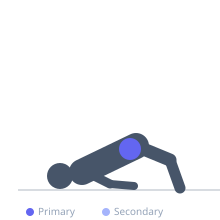
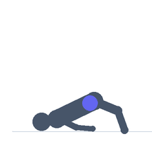

Exercise guide / Frog Pump
Frog Pump
The frog pump is a floor glute bridge variation performed with the soles of the feet pressed together and knees flared outward, resembling a frog's legs. The externally rotated hip position places the hip flexors and adductors in a lengthened state, reducing their contribution and allowing the gluteus maximus to work in a shortened range with high activation. It is often used for glute activation and high-rep pump work at the end of a training session.
Primary muscles
gluteus maximus
Secondary muscles
gluteus medius
Stabilizers
transverse abdominis
adductors
Equipment
No Equipment (Bodyweight)
Optional
Dumbbell (Fixed)


Starting position
- Lie on your back with the soles of the feet pressed together and knees fallen outward (externally rotated), forming a diamond shape with the legs. Feet close to the hips.
Setup
- No equipment required. A dumbbell or weight plate can be rested on the hips for added resistance.
Steps
- Step 1: Lie on your back with soles of feet pressed together, knees flared outward. Feet 20–30 cm from the hips.
- Step 2: Drive the hips upward by squeezing the glutes.
- Step 3: Extend until the hips are fully extended and the body forms a straight line from shoulders to knees.
- Step 4: Squeeze the glutes hard at the top for 1–2 seconds.
- Step 5: Lower the hips back to the floor under control.
Coaching cues
- Squeeze the glutes — not the lower back
- Push hips fully up — don't stop short
- Keep feet pressed together throughout
Breathing
- Exhale as you drive the hips up. Inhale as you lower.
Range of motion
- Full hip extension at the top. Hips to floor at the bottom.
Tempo
- 1-2-2-0 (squeeze 2s at top)
Common mistakes
- Not fully extending the hips at the top — push all the way up
- Letting the lower back arch excessively — posterior pelvic tilt at the top
- Allowing the feet to separate — keep the soles pressed together
Safety
- Very low-risk exercise
- Hip discomfort in the externally rotated position may indicate hip flexibility limitations — do not force the range
Training
- hypertrophy: 15–30 reps
- endurance: 20–40 reps
- hypertrophy: 2–3 sets
- endurance: 2–3 sets
- Rest: {'hypertrophy': 45, 'endurance': 30}